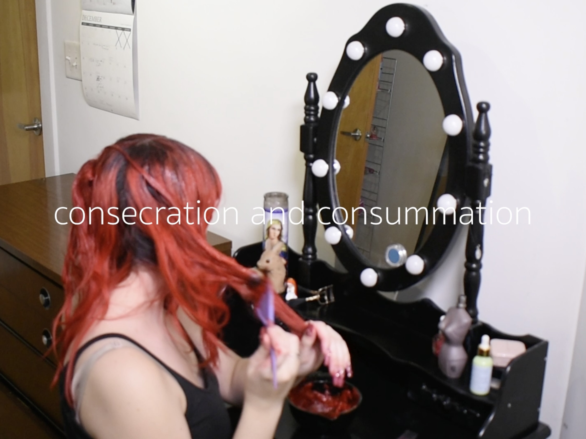
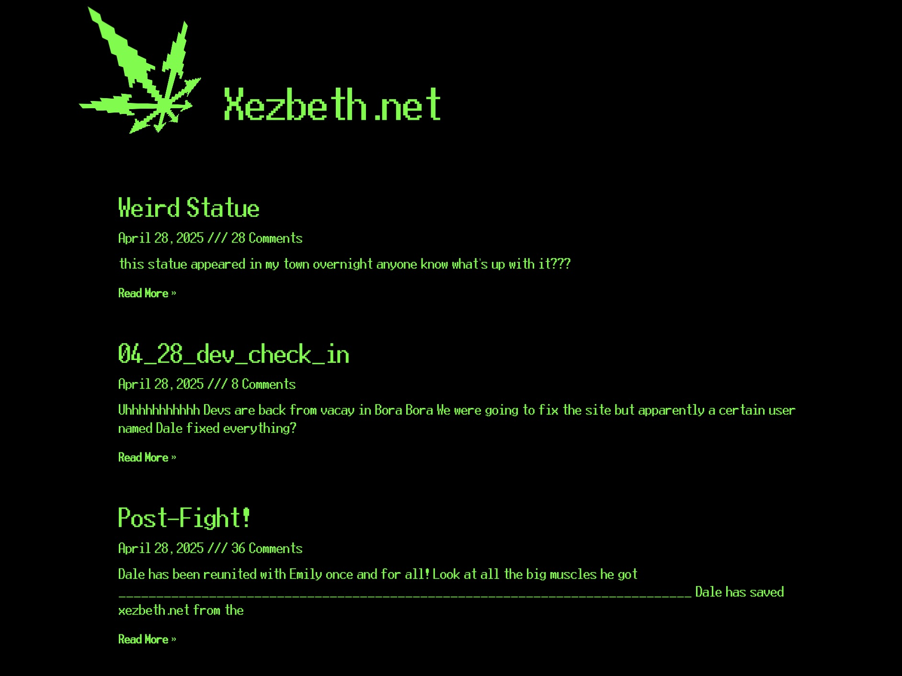
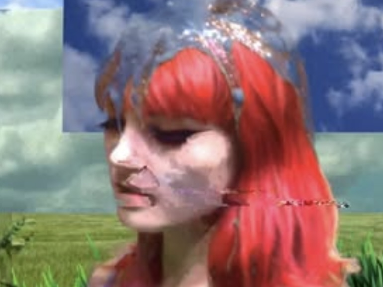

declaration
a video piece abt my matrimonial relationship with my red hair dye.
written, shot, and edited by me.

xezbeth.net
xezbeth.net is a narrative driven performance + net art piece made create alongside my lovely collaborators and frends: max biscarr, bella frank, + victor romanko.

digital cleanse (in search of bliss)
a 2024 glitch performance video starring drag performer lichen von stag and me! produced, directed, filmed, and edited by wren tiffany.
about me
ellie loor was born in 2003 in North Carolina. in 2025, they received their BFA in Kinetic Imaging at Virginia Commonwealth University. loor has shown work in “The Art Happens Here” at The Anderson, Richmond, VA and in “The Color Red” at List Art Center, Providence, RI. this year, their essay “Immaculate Cuteness: The Liberatory Power of the Vatican's First Anime Girl” is set to be published by Do Not Research. they are currently working on a body of work alongside the net consumption collective. loor lives in Richmond, VA.